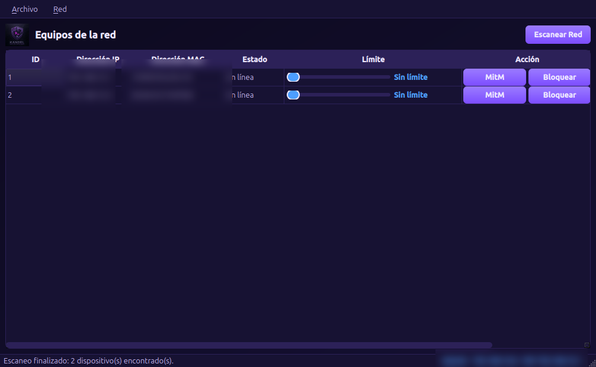
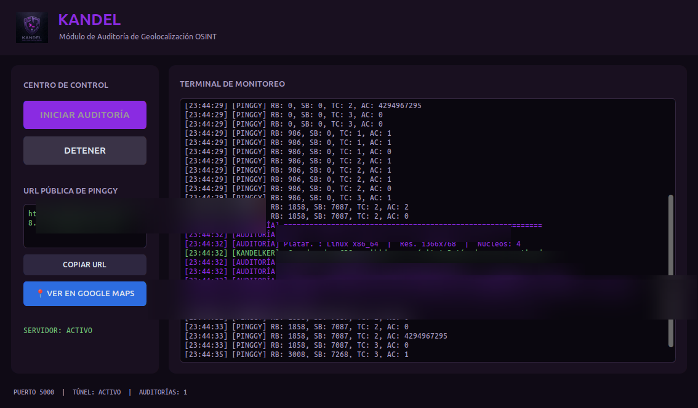
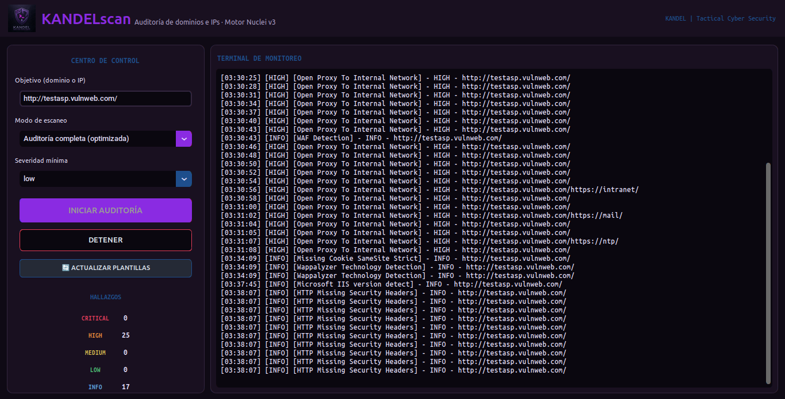

KANDEL
Tactical Cyber Security
AUDITORÍA Y CIBERSEGURIDAD PROFESIONAL
Perimetral · Web · Wi-Fi · OSINT · Forense · IA
Tactical Cyber Security
AUDITORÍA Y CIBERSEGURIDAD PROFESIONAL
Perimetral · Web · Wi-Fi · OSINT · Forense · IA
Tu red, tu Wi-Fi, tu web y tus datos — puestos a prueba como lo haría un delincuente digital real. Descubrimos la puerta abierta ANTES de que alguien la cruce y te entregamos la llave para cerrarla.
Tu empresa maneja algo valioso: datos de tus clientes, tu reputación y la continuidad de tus operaciones. Un solo ataque puede costarte muchas veces más que prevenirlo. KANDEL te da la certeza de saber exactamente dónde estás débil y cómo blindarlo — en días, no en meses.
El 43% de los ciberataques va dirigido a PYMEs.
El antivirus no detiene ataques dirigidos ni una red comprometida.
Un Wi-Fi abierto o débil es una puerta directa a tu red interna.
Tus datos, tus clientes y tu operación SÍ valen algo.
La buena noticia: el 90% de las vulnerabilidades críticas se corrigen con medidas que un profesional detecta en una auditoría de pocos días. No necesitas un ejército de seguridad — necesitas saber qué cerrar primero.
Evaluación de la superficie de red expuesta y detección de puntos débiles en el perímetro.
Análisis de aplicaciones y lógica web para identificar vulnerabilidades explotables.
Mapa de exposición digital: dominios, subdominios, empleados expuestos y credenciales filtradas.
Análisis de cifrado WPA2/WPA3, puntos de acceso rogue, Evil Twin y control de dispositivos.
Análisis de memoria en frío, artefactos volátiles y respuesta a incidentes con cadena de custodia.
Reportes ejecutivos PDF con formato KANDEL Premium en menos de 24 h, con IA local y nube.
Endurecimiento de infraestructura: UFW, bloqueo IPv6, ARP fija y monitoreo Arpwatch.
Ciclo completo ataque-defensa documentado con retainer trimestral y reporte consolidado.
Tres niveles pensados para el tamaño y presupuesto de tu negocio. Todos incluyen contrato, NDA, evidencia y los dos reportes. Elige el que protege lo que más te importa.
Auditoría de entrada
Ideal para comercios, talleres y oficinas pequeñas con red básica.
Auditoría completa
Ideal para clínicas, despachos y oficinas con datos sensibles de clientes.
Auditoría táctica completa + forense
Ideal para negocios con operación crítica y mayor superficie expuesta.
Recomendación KANDEL: para la mayoría de las PYMEs locales, el plan SENTINEL ofrece el mejor equilibrio entre cobertura y presupuesto. El plan BASTION es la apuesta cuando hay datos regulados (salud, finanzas, jurídico).
Nota: El Reporte Técnico de Remediación e instrucciones de mitigación se enviarán en un archivo cifrado (.zip/.pdf) inmediatamente después de confirmado el Pago Final.
Un proceso transparente y ordenado, con una palabra clave que garantiza tu control total.
Mapeo de tus activos digitales, OSINT y fuga de credenciales.
Simulación de ataques a tu red, Wi-Fi y web.
Logs, memoria RAM y capturas procesados con IA local aislada.
Reporte ejecutivo + técnico con remediación paso a paso.
Control total tuyo: KANDEL solo inicia cualquier prueba con tu autorización expresa y por escrito (contrato + NDA firmados) y tu palabra clave de inicio. Nada se ejecuta sin ella. Tú mandas.
KANDEL no es un freelancer con herramientas: es una empresa con método, evidencia, contrato y estándares profesionales. Esto es lo que nos diferencia.
Contrato, NDA y palabra clave de autorización — la seguridad empieza por el proceso.
Tus datos no salen de nuestros laboratorios (Zero-Cloud-Leak).
Ejecutivos y técnicos, listos para tu junta, tu seguro o una auditoría externa.
Metodología OSSTMM / OWASP y clasificación de severidad CVSS.
Entregables en menos de 24 horas tras finalizar las pruebas.
Laboratorios de campo, red de IA experta en seguridad y herramientas de clase empresarial: cada fase de la auditoría se ejecuta con precisión y evidencia verificable.
Laboratorios de campo y herramientas de KANDEL:
Plataforma de procesamiento y defensa:
Herramienta propia de KANDEL para gestión y auditoría de redes locales. Interfaz gráfica profesional, instalable por USB y lista para usar en minutos.

Interfaz KANDELlimiter: escaneo de equipos, control de velocidad y bloqueo selectivo.
Detecta automáticamente los equipos conectados a la red local y muestra su dirección IP y MAC.
Limita la velocidad de cualquier equipo de 64 Kbps a 10 Mbps con un simple deslizador.
Corta o restaura el acceso a Internet de un equipo en un clic. Incluido en la versión PREMIUM.
Uso exclusivo en redes propias o con autorización explícita del propietario.
Herramienta propia de KANDEL para auditorías de geolocalización OSINT y concienciación corporativa. Interfaz gráfica profesional con enlace público automático y captura de coordenadas en tiempo real.

Interfaz Kandelker: URL pública, terminal de monitoreo y botón Ver en Google Maps.
Captura en tiempo real las coordenadas GPS del objetivo autorizado y activa el botón Ver en Google Maps.
Genera una URL HTTPS pública sin cuenta mediante túnel Pinggy, lista para copiar y enviar.
Terminal de monitoreo en vivo, persistencia de resultados en JSON y control total desde la interfaz.
Uso exclusivo en campañas autorizadas por el Director (contrato + NDA + palabra clave "ataque autorizado").
Herramienta propia de KANDEL para auditoría de dominios y sitios web con motor de escaneo de última generación. Descubre en minutos qué vulnerabilidades expone tu página antes de que lo haga un atacante real.

Auditoría real en vivo: hallazgos de alta severidad y tecnologías detectadas, contados en tiempo real.
Analiza tu sitio web contra más de 13.000 firmas de ataques y vulnerabilidades conocidas, actualizadas a diario.
Cada hallazgo se clasifica por criticidad (info, baja, media, alta, crítica) y se explica en español para que lo entiendas sin ser experto.
Terminal de auditoría en tiempo real con contadores por severidad. Sabes exactamente qué encontró tu página y en qué ruta.
Uso exclusivo en dominios propios o con autorización explícita del propietario. Auditorías solo con contrato + NDA + palabra clave "ataque autorizado".
Todos los informes, evidencias y datos de clientes son tratados con rigor y sigilo. La información sensible viaja cifrada y se entrega únicamente a las partes autorizadas.
Agenda una sesión de diagnóstico gratuita o solicita una cotización personalizada.
Nelson Decan
nelsondecanmontilla@gmail.com
Disponible próximamente